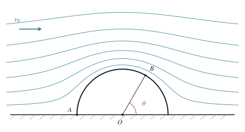

P0092 · 出版物习题 · 原书第 1.57 题
半圆柱飞机棚在理想风场中的升力
用圆柱势流的表面速度和伯努利关系，积分计算开门飞机棚受到的向上风载。
1 题目
1.1 物理情境
长为 、横截面为半径 的上半圆的飞机棚置于水平地面；来风垂直于棚的轴线。远处风速为 ，空气密度为 。棚门 敞开，使棚内压强等于迎风侧门口的停滞压强。
1.2 物理过程
风沿棚外表面绕流。由已给出的理想无旋速度势计算棚外各处速度和压强，再求风对整个棚壳的竖直合力。
1.3 已知参数和理想化假设
忽略高度造成的大气压差与端面效应，棚内压强均匀。以棚截面圆心为原点、水平风向为 轴，极坐标 中外部速度势为 ；速度按 定义。取 ，结果保留两位有效数字。
1.4 求解目标
求风施加于飞机棚的竖直合力大小及方向。

流线是所给速度势的共轭流函数的等值线；屋面半圆由 构造。
2 思路与提示
由给定势函数求半圆柱表面切向速度；伯努利方程给出棚外压强。棚内压强由开门处确定，最后沿曲面投影积分。
3 解答展开 / 收起
4 方法与讨论
棚顶的增速降低外压，而开门使内压接近迎风停滞压强，因此压差在顶部最大。压力是面力，必须按局部法线的竖直投影积分；只拿棚顶一点的压强乘整个面积并不正确。此结果依赖理想势流与均匀内压假设。